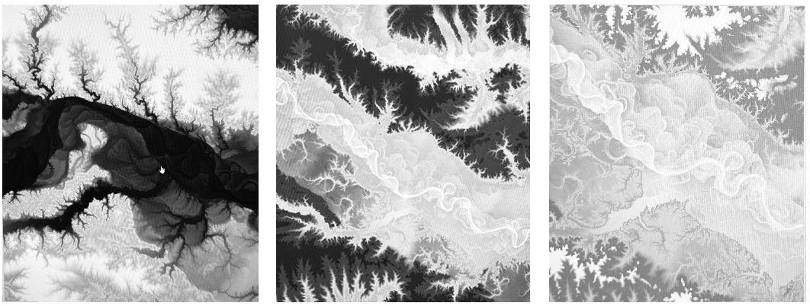

When I think of time, I think of a three dimensional ever changing fabric. I think of a river that flows as one body, stitched by its own entangled dance with matter. The past will forever exist as does the future, held by the bed of the river. I think of how time changes paces depending on location, like a current, and how it bends and warps like water. And how a moment in time is ephemeral, a collision that ends, but whose particles never perish. Where does the past live???? It doesn’t live in the house it once did, the family moved away. The daughter is now a mother, she has a daughter and a home of her own. The particles of time are never dying, only leaving the homes they’ve outgrown.
There are patterns like whirlpools in personal and collective timelines, repetitions and circles where history repeats making the landscape of time an upward spiral with a constant radius.
Time moves in spirals and it’s making me dizzy to return to the same place from a distance, so aware of the void between, Is this what it means to grow up, to experience every place at a distance from what it used to be?